Step-by-step operational guide for using AuditX to perform ITGC audits, manage SAP systems, generate reports, and maintain the application.
Failure to complete the following steps will result in execution failures, missing screenshots, or incomplete audit evidence.
Required for Foreground execution mode (SAP GUI must be visible on screen) and Word Interop (COM automation requires an interactive desktop session). Remote Desktop (RDP) sessions are supported but must have an active display.
The application targets .NET Framework 4.8. Verify via:
Control Panel → Programs → Turn Windows features on/off → .NET Framework 4.8
Or run: reg query "HKLM\SOFTWARE\Microsoft\NET Framework Setup\NDP\v4\Full" /v Release
Required by SAP NCo (sapnco.dll). Install both x86 and x64 versions from Microsoft. If missing, you will see "The specified module could not be found" errors when starting Housekeeping tab.
Microsoft Office 2016 or later. Word must be fully licensed and activated — trial/expired versions will throw COM Interop exceptions. Used for all audit evidence documents and monthly reports.
SAP GUI for Windows 7.70 or later. Default path:
C:\Program Files (x86)\SAP\FrontEnd\SAPgui\saplogon.exe
Configurable in Settings tab under SAP Logon Path.
Go to: SAP Logon → Options → Accessibility & Scripting → Scripting
The SAP parameter sapgui/user_scripting must be TRUE. Verify via transaction RZ11. Contact your SAP Basis team if this is disabled — it requires a system restart on some versions.
Navigate to Settings Tab and configure all required fields before first execution:
HH:mm:ss)saplogon.xml)Default path: %USERPROFILE%\Downloads\ITGC REPORT
Subfolders are created automatically: ITGC REPORT → {Month, Year} → {ControlID}
The user running AuditX must have full write access to this folder tree.
Log files are written to: C:\Void\Logs\
The directory is created automatically on first run, but the executing user needs write access to C:\Void\. If blocked by policy, configure an alternate path.
SAP GUI has a security layer that may block external scripts from controlling the GUI session. You must add an explicit "Always Allow" rule for the AuditX application directory to prevent permission dialogs during automation.
Open SAP Logon, then navigate to:
SAP Logon → Options (F12) → Security → Security Settings
Click "Add Rule" or "+" button and set the following:
| Rule Action | Always Allow |
| Object Type | Script / Application |
| Path / Directory | C:\AuditX\ (or your actual installation path) |
| Scope | All files in directory and subdirectories |
Your security settings dialog should look like the screenshot below. The AuditX directory must appear in the Allowed list with Always Allow permission.
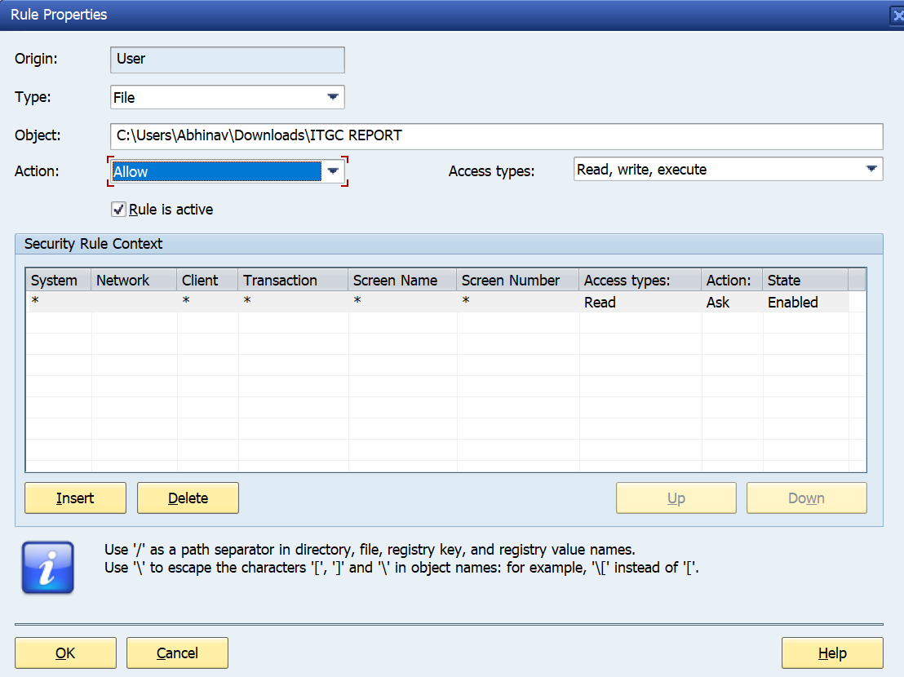
Click OK to save the security settings. Restart SAP Logon for the changes to take effect. Run AuditX and verify no security prompt appears when execution begins.
| ✓ | File | Purpose | Status |
|---|---|---|---|
AuditX.exe | Main application executable | Required | |
sapnco.dll | SAP NCo connector (RFC communication) | Required | |
sapnco_utils.dll | SAP NCo utility functions | Required | |
System.Data.SQLite.dll | SQLite database driver for RFC system storage | Required | |
Newtonsoft.Json.dll | JSON parser for Firebase license validation | Required | |
license.cert | AES-encrypted license certificate | Required | |
ITGCControls.xml | Control definitions, descriptions, required actions | Required | |
saplogon.xml | SAP system connection list (from SAP GUI) | Required | |
cover.png | Report cover page image | Recommended |
Proceed to SOP-01: Application Login to begin using AuditX.
Double-click AuditX.exe from the installation directory. The Login Form will appear on screen.
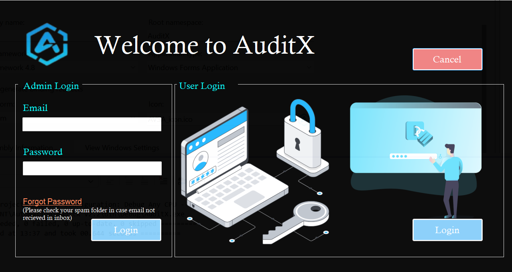
Click the Login button. A Windows credential dialog appears with your DOMAIN\Username pre-filled. Enter your Windows password.
Uses native Windows CredUI API. Your credentials are validated against Active Directory via LogonUser Win32 API — not stored anywhere by AuditX.
After Windows authentication succeeds, the system automatically:
license.cert from the application directoryDOMAIN\UsernameThe Home Dashboard opens with all 7 tabs accessible. Click your profile avatar (top-right) to view your name, email, and license expiry date.
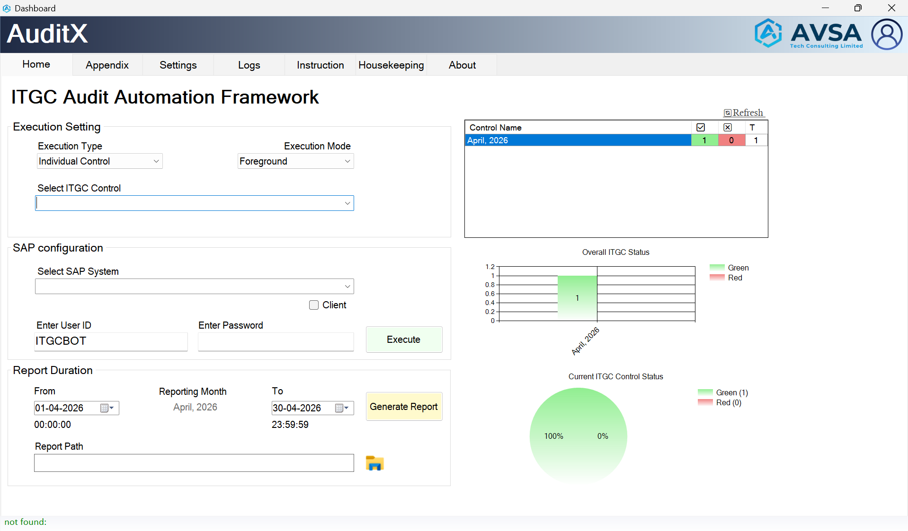
In the Execution Setting group, choose from the first dropdown:
PrintWindow API with timestamp overlayChoose from the Select ITGC Control dropdown (e.g., ITGC01 - SAPOSS Enabling Audit). The control description auto-populates below the dropdown.
Choose the target SAP production system from the Select SAP System dropdown. The System ID displays to the right. Optionally check Client to manually override the default client number.
Enter your SAP User ID (default: ITGCBOT) and Password.
These are SAP credentials, NOT Windows credentials. The account needs sufficient authorization for all transactions used by the selected ITGC control.
In Report Duration, set the From and To dates. The Report Month label auto-calculates (e.g., "July, 2025") and the output folder path updates automatically.
Ensure all fields in the Home tab are properly configured per SOP-02.
The system validates all inputs, then automatically:
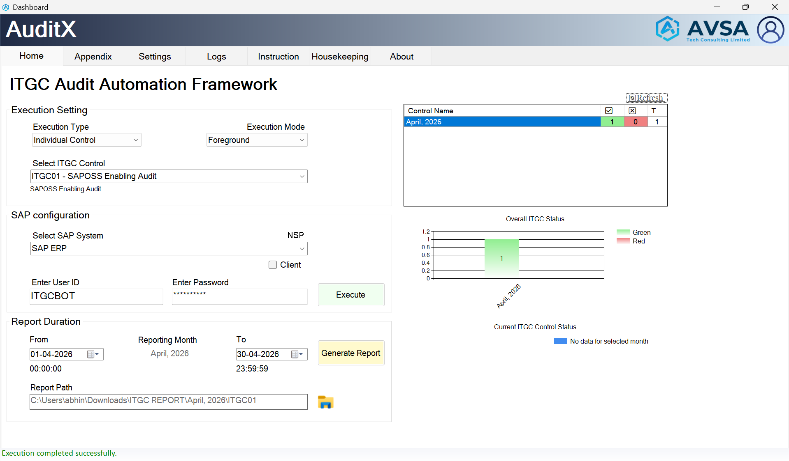
The Word report saves to the folder path shown in the Report Duration section. Click the folder icon to open the output directory directly.
The ITGC Control dropdown becomes disabled and auto-populated with all active controls. The system iterates each in sequence.
Same as SOP-02. Ensure the SAP account has authorization for all transactions used across all controls.
The system iterates through each control. Failed controls are logged with full stack trace but execution continues with the next control.
A dialog confirms all controls executed. Individual Word reports are saved in control-specific subfolders under the reporting month directory.
Select the reporting month using the From/To date pickers. The Report Month label must show a valid value (not "Invalid date").
The system reads ITGC_Audit_Comments_{Month}.csv and generates a Word report with these sections:
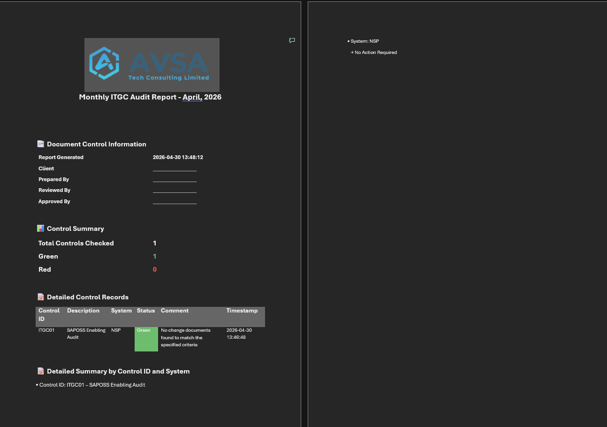
Fill in Client, Prepared By, Reviewed By, and Approved By fields in the Word document. Save with appropriate version name and distribute per your organisation's process.
Click the Housekeeping tab, then click the RFC Setting button in the Menu group.
Click Add and fill in all required fields:
| System Name | Friendly name (e.g., "PRD — Production") |
| App Server Host | SAP application server hostname or IP |
| System Number | 2-digit system number (e.g., "00") |
| Client | 3-digit client (e.g., "100") |
| RFC User | RFC-enabled SAP user (read-only is sufficient) |
| Password | User password (encrypted via DPAPI on save) |
| Language | EN |
Click Test Connection. A loading dialog appears while pinging the RFC destination. A success/failure message confirms connectivity.
Click Save. The password is encrypted using DPAPI (ProtectedData.Protect with CurrentUser scope) before writing to SQLite. The status grid updates with Active/Inactive ping results.
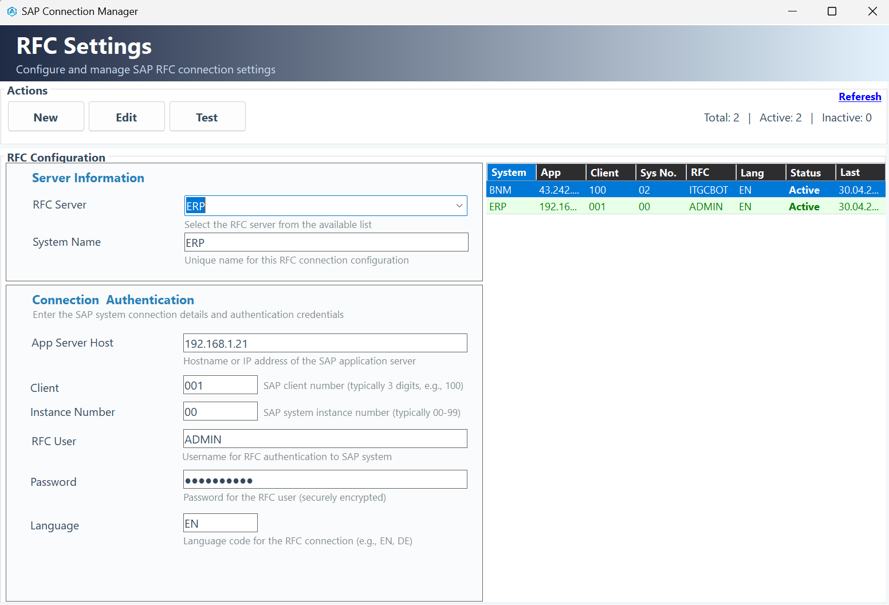
Choose a configured RFC system from the SAP System dropdown. Only systems added via SOP-06 appear here.
| Target Date | Users with last login before this date are flagged Inactive |
| User Types | Select: Dialog (A), Service (S), Background/Comm (C), System (B) |
| Exclude Locked | Check to exclude already-locked users from results |
| Validity | Valid users (no expiry / future expiry), Invalid users (expired), or both |
| Creation Filter Days | Skip users created within N days (default: 15). Prevents flagging new accounts. |
| Rows to Display | Rows per page (default: 20) |
The system: pings the SAP server, fetches USR02 data via RFC_READ_TABLE, applies all filters, and displays paginated results.
Each row shows: Username, Created On, Valid To, Last Login, User Group, User Type, Lock Status, Last Password Change, Active/Inactive status.
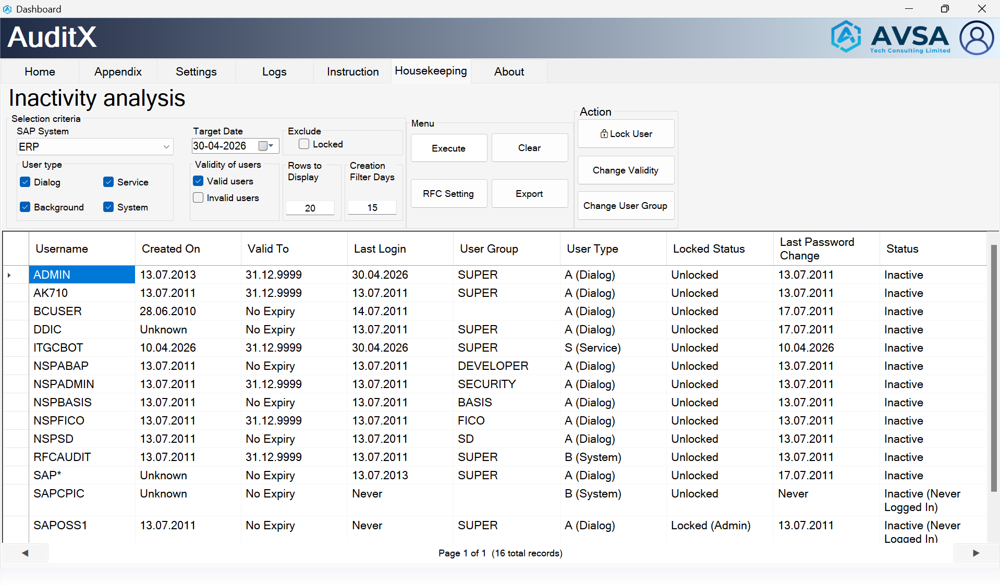
Choose ── Multi System Analysis ── from the system dropdown. This option appears automatically when 2+ systems are configured.
A borderless, DPI-aware selection form appears showing all configured systems as cards. Check at least 2 systems, then click "Analyze N Systems".
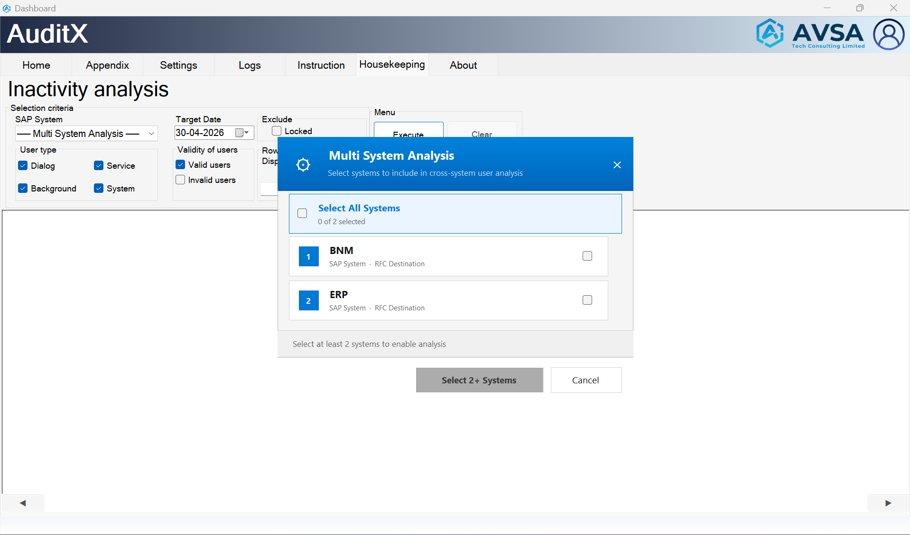
The grid shows per-system login columns, Cross-System Status, and Systems Active In for each user. Export to CSV or Excel for full analysis.
After running SOP-07, select one or more rows in the result grid. Multi-select by holding Ctrl or clicking multiple rows.
Calls BAPI_USER_LOCK + commit
Sets GLTGB to target date
Moves users to INACTIVE group
Confirm the action dialog. A summary shows success/failure for each user. The analysis automatically re-runs to reflect the changes.
User lock and group changes are applied directly to SAP via BAPI calls. Always confirm the user list carefully before proceeding. Lock User is not available in Multi-System Analysis mode.
Choose a log file from the dropdown. Files are sorted newest first. Log files are daily: SAPExecutionLog - USERNAME YYYY-MM-DD.txt
Type in the filter box to search across all columns in real-time. Rows are filtered as you type. Try "ERROR", "ITGC01", "Login", "Failed".
Double-click any row to see a full detail popup including the complete message, timestamp, user, status, and any stack trace for exceptions.
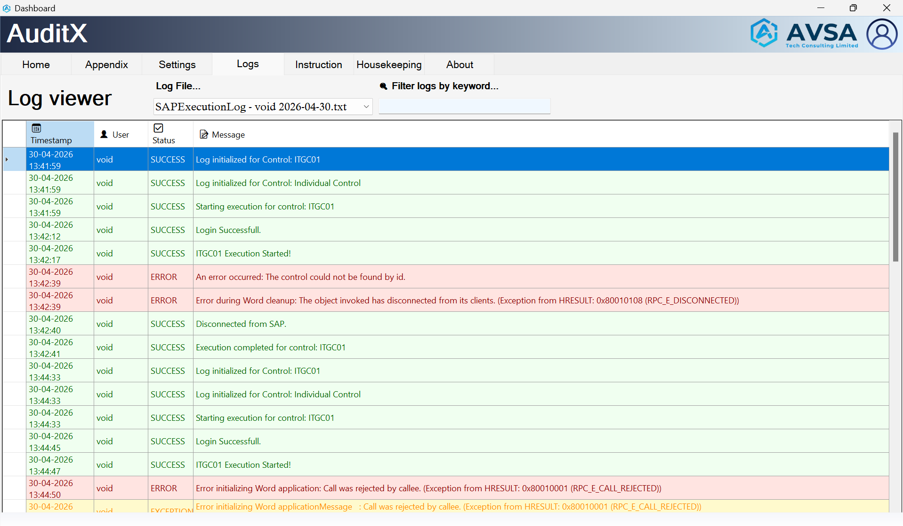
Switches the DataGridView to editable mode. The Save and Revert buttons become visible. Edit mode is indicated in the status bar.
Double-click any cell to edit: Control Ref, Control Definition, Description, or Risk. Click the Control Ref column cell to open/close the associated action note popup.
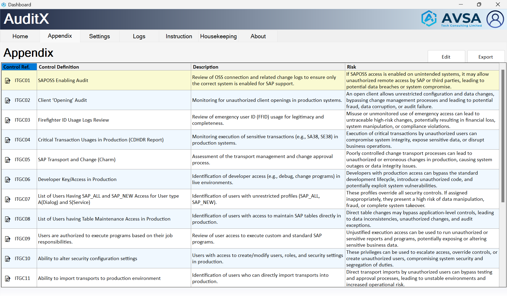
Click Save or press Ctrl+S. A timestamped backup is automatically created in the Backup/ folder before any changes are written to ITGCControls.xml. If no changes are detected, save is skipped.
Click the Settings tab. The ctrlGeneral UserControl loads with all configurable parameters.
| Setting | Description | Example |
|---|---|---|
Start Time | Report start time for SAP queries | 00:00:00 |
End Time | Report end time for SAP queries | 23:59:59 |
SAP GUI XML | Click to select your saplogon.xml file | .\saplogon.xml |
ITGC Control XML | Click to select ITGCControls.xml | .\ITGCControls.xml |
SAP Logon Path | Click to select saplogon.exe | C:\...\saplogon.exe |
Download Destination | Click to select output root folder | C:\Users\...\Downloads |
ITGC01 OSS ID | SAP OSS user ID to check in ITGC01 | SAPSUPPORT |
ITGC04 T-Code List | Comma-separated critical transaction codes | SM30,SM31,SE16 |
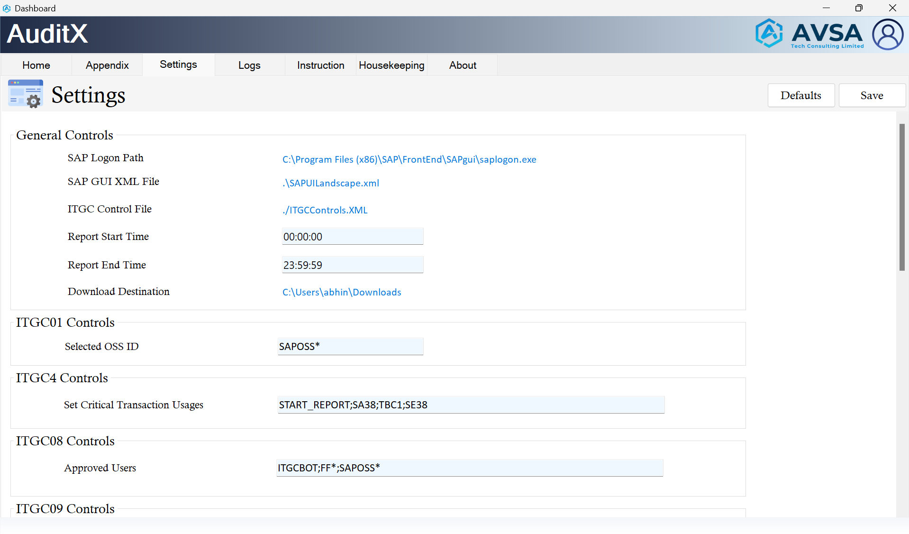
All settings are validated (time format HH:mm:ss, required fields) and persisted to My.Settings. A confirmation dialog confirms success.
Click Revert Defaults to reset all settings to factory defaults via My.Settings.Reset(). This cannot be undone.
| Version | Date | Author | Changes |
|---|---|---|---|
| 2.0 | July 2025 | Void Automation | Complete rewrite — added Prerequisites, SAP Security Settings, real screenshots, 12 SOPs |
| 1.0 | January 2025 | Void Automation | Initial release |